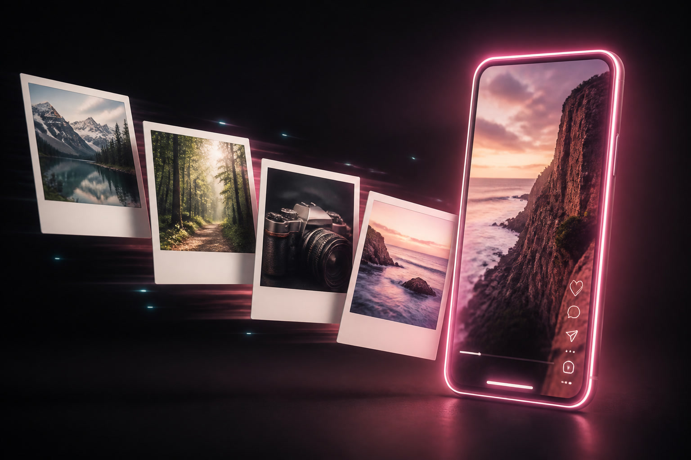

Studio
Open f-motion.com, drop media or write a brief, and keep the draft.
Open studio →AGENT LOOP
Drop photos or just talk. F-Motion asks only what it still needs, then returns a vertical preview and the same project — ready to edit in the skill or the studio.

Update
Hand an agent a few stills or clips. It reads what you have — count, still vs video, portrait vs landscape — then asks at most four missing questions. The preview uses your files. The draft stays yours.

Update
No files yet? Same loop. Answer intent, audience, length, and where visuals come from. You get a draft immediately. A preview renders only after media or licensed stock is actually attached — never an empty storyboard.
Update
The preview is never a published post. “Keep editing” opens the same project in the studio. Change one caption, swap one clip, then render again. Host metering: preview costs 1 unit, final costs 2. Pexels and FAL stay BYOK.

One skill folder. Listings stay on this page as they go live. Never put names, emails, or keys in posts or video copy.
Open f-motion.com, drop media or write a brief, and keep the draft.
Open studio →The in-repo skill is skills/fmotion. Ask for a reel; the agent follows the four-question loop.
Slug fmotion is ready. After the first public release: